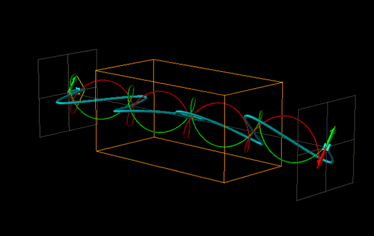

Change in Optical Rotation Due to Change in Wavelength
Previous!
Help!
Instructions!
Absorptive!
Finish!
Here refractive indices of left and right circular polarised light are fixed and equal to 1.10 and 1.00 resp.
Now you are changing wavelength of light to two different possible values and notice the difference on how the wavelength effects polarised light.
Choose possible wavelengths :
wavelength=600nm
wavelength=500nm
wavelength=400nm
wavelength=300nm
wavelength=200nm
Choose possible wavelengths :
wavelength=600nm
wavelength=500nm
wavelength=400nm
wavelength=300nm
wavelength=200nm
